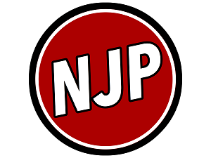

Weirdo Burns Down 3 Masonic Lodges
March 31st, 2021
I mean really the title says it all.
Vancouver Sun:
TDC_ARTICLE_START
A 42-year-old man faces arson charges, thanks to a bit of luck for a Vancouver police officer, in connection with the bizarre news that three Masonic buildings caught fire within 90 minutes of each other early Tuesday.
But before the suspect could be arrested at the third fire, in east Vancouver, he managed to flee after getting into a “physical fight” with an armed off-duty officer who happened to be in the area, said Vancouver police spokeswoman Const. Tania Visintin.
The man was arrested about 2-1/2 hours later in Burnaby. Vancouver police and North Vancouver RCMP are preparing their recommendations for charges to Crown counsel.
Benjamin Kohlman has been charged with one count of arson and one count of assaulting police officer pertaining to the incident in Vancouver.
“The two arsons that occurred in North Vancouver are still under investigation,” said Visintin. “We anticipate recommending more charges to Crown counsel in the coming weeks related to the North Vancouver files.”
TDC_ARTICLE_STOP
This is actually not the right Benjamin Kohlman. I searched the name and only found this picture. I think this guy is somehow involved with the Chicago Blackhawks. I just thought it would be funny to include his picture in this story, because for some reason it fits.
Anyway, here's a picture of the masonic lodge itself on fire. This is, I believe, Park Lodge Hall on Rupert Street and 29th Ave. in Vancouver. Crazy stuff.
In the next part of the article they describe the video, but you should honestly see it for yourself. Skip to 1:05 for the good bits. Apparently he gets in an altercation with an off duty police officer after the third arson. This happens just after the two passerbyes stopped filming.
TDC_ARTICLE_START
The dramatic confrontation capped off a strange morning, which began when North Vancouver firefighters were called to a fire around 6 a.m. at the Lynn Valley Lodge, owned by the Masonic Centre, a fraternal organization for masons.
Before 7 a.m., North Van firefighters responded to a second fire at the North Vancouver Masonic Centre on Lonsdale and 12th avenues, a 10-minute drive from Lynn Valley.
The fire was fully engaged, North Vancouver Fire Chief Greg Schalk told the media at the site around 11 a.m. while firefighters continued to fight the flames that destroyed the 110-year-old building and businesses at street level.
“It’s just scary knowing people are going around doing things like this,” said Brendan Sherwin, who lives nearby.
TDC_ARTICLE_STOP
I have to admit I'm confuzzled here. On one hand, Masonic Lodges something something New World Order. On the other hand, that shit seems really fake and gay and the type of thing that goys who don't wanna talk about jews say. Also, this guy seemed pretty crazy, I'll show his facebook posts below.
TDC_ARTICLE_START
“Somebody had an agenda. Who knows why?” said Sonny Bond, who wore a windbreaker embroidered with the Masonic symbol above “B.C. and Yukon Grand Lodge 150th anniversary,” which is this year. “The world is full of nuts.”
He said the Masons are a “fraternity that does charity” and 200 members meet regularly with other lodges, but haven’t been during COVID-19. “To be a mason, you have to be a member” of the men-only club, he said.
Neighbour Rudy Lakovic was visiting with Bond and said he’s lived next to the lodge since it was built 45 years ago, and they’ve been great neighbours.
“You can’t ask for anybody better,” he said.
No one was hurt in the fires or during the arrest, police said.
The Lonsdale building, which dates to the 1900s and housed a library of old books, art and photos, is a “complete loss,” said Schalk. “It’s a stunning loss.” The fire also destroyed nearby Feed Me Fit, which provides pre-made meals for pickup by 5,000 customers a month, said owner Venessa Stonehouse. “Everyone’s just devastated.”
TDC_ARTICLE_STOP
Yeah, this is the guys post on Facebook. So he burned down a lodge that appeared to be a pretty apolitical organization that helped out members of the community, because he's a nutter who had some Q type conspiracy theories he read online. Yeah, fuck this guy.
Weirdly enough this happened just 5 minutes away from the stabbing site I detailed in my previous article.
